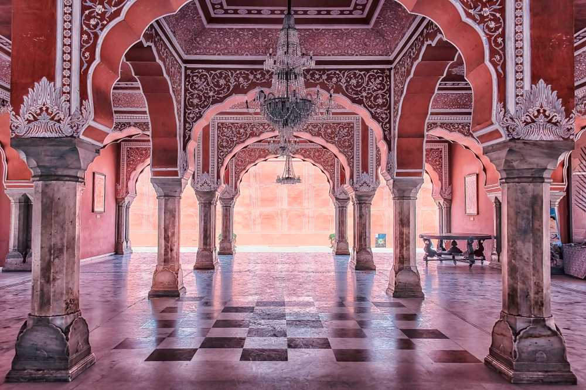
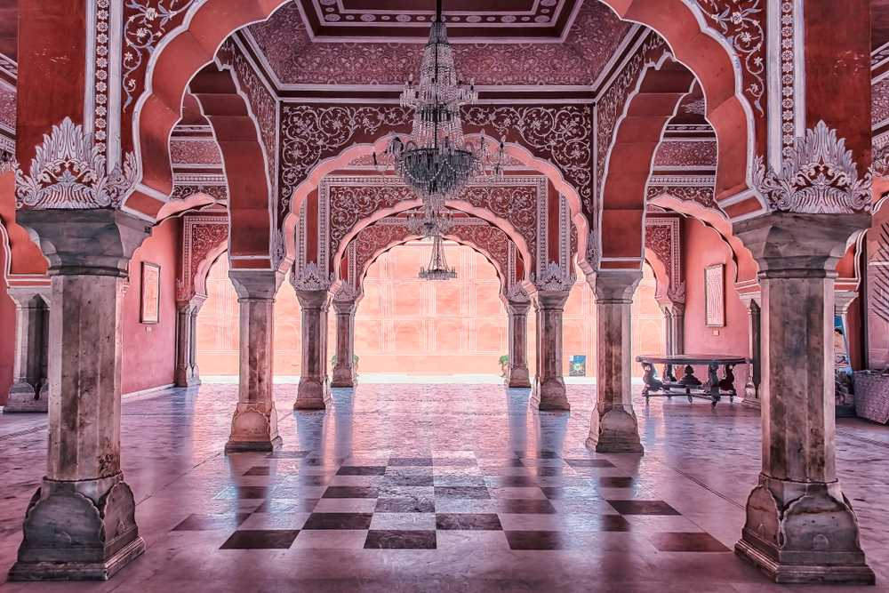
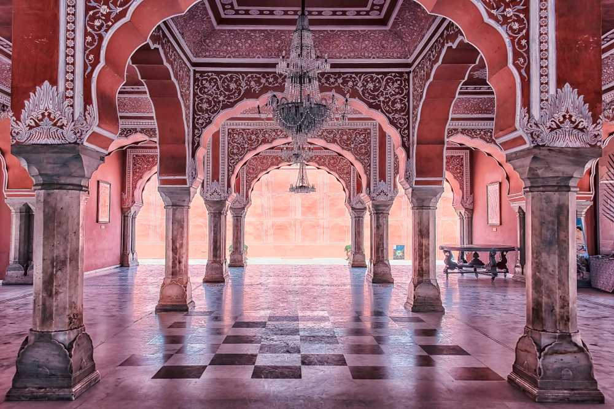
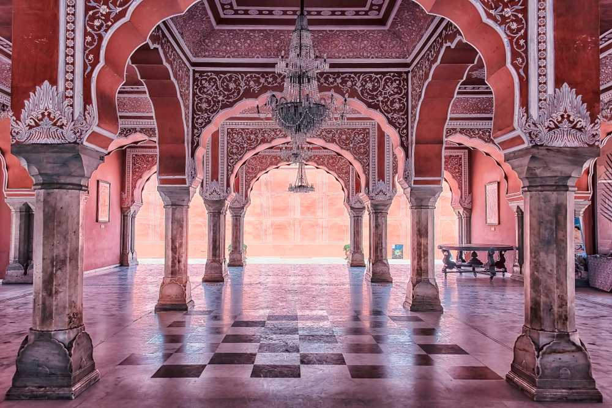

Jaipur
 

 

Although planning a trip alone isn’t very interesting, it can certainly be more absorbing. It takes a lot of efforts to identify the right tourist destination that would give you all that you expect on a holiday. Once you have the destination decided, you need to further your research to find out the important tourist places in the destination. Then comes the travel plan and arrangements for accommodation. If your plan is to visit Delhi during your holidays, here are some suggestions that would help you with your plan. Here are places that you must visit in Jaipur
In the Pink City of Jaipur, cradled on the top of the Aravali Hill lies the Amer Fort, one of the most magnificent palaces in India. Also commonly known as the Amber Fort, this majestic building with its maze-like passages and serpentine staircases is an architectural masterpiece and with significant importance in Indian history. Only 11 kilometres away from the capital city of Jaipur, Amer Fort is clad in pink and yellow sandstone and is a part of an extensive complex. Built by one of the most trusted generals of Akbar, Maharaja Man Singh I in the year 1592, Amer Fort served as the main residence of the Rajput Rulers.
The magnificent City Palace in Jaipur is one of the most famous tourist attractions located in the old part of the city. Built by Maharaja Sawai Jai Singh during the years 1729 to 1732, the vast complex of the palace occupied one-seventh of the walled city. In fact, it was once the seat of the Maharaja of Jaipur. The palace is divided into a series of courtyards, buildings and gardens including the Chandra Mahal and the Mubarak Mahal. The museum showcases various unique handcrafted products and other things that belong to the royal heritage of the City Palace.
The massive edifice of Hawa Mahal stands at the intersection of the main road in Jaipur, Badi Chaupad and was built by Maharaja Sawai Pratap Singh in the year 1799. Hawa Mahal derives its name from its unique structure, which is a mesh of small windows that allowed cool wind to enter the palace and hence kept the palace comfortable during the hot summer months. The main reason behind the palace's construction was to allow the women of the royal house to observe the festivities on the streets whilst being unseen from the outside as was the custom of the land. It is located right on the edge of the City Palace Jaipur and extends right to the 'zenana'.
Located near the City Palace in the regal city of Jaipur, Jantar Mantar is the largest stone astronomical observatory in the world. Owing to its rich cultural, heritage and scientific value, Jantar Mantar in Jaipur has also been featured on UNESCO's list of World Heritage Sites. This ancient study boasts of nineteen instruments built out of stone and brass and was built by Raja Sawai Jai Singh in 1727-33. The intelligent construction and placement of these instruments allowed the observers to note the position of heavenly bodies with their naked eye alone. Time has failed to lay dust upon this engineering marvel and it still works as well as it used to in the olden times.
Many more...